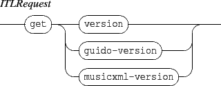

Next: 4. Common components messages
Up: INScore OSC Messages Reference
Previous: 2. ITL messages
Contents
Index
3. Scene messages
A scene may be viewed as a window on the score elements. Its address is /ITL/scene. It handles the following messages:

- reset: clears the scene (i.e. delete all components) and resets the scene to its default state (position, size and color).
- fullscreen: requests the scene to switch to full screen or normal screen. The parameter is interpreted as a boolean value. Default value is 0.
- commonMsg: see section 4 p.
![[*]](crossref.gif) .
.
Grame - Interlude project [ANR-08-CORD-010]